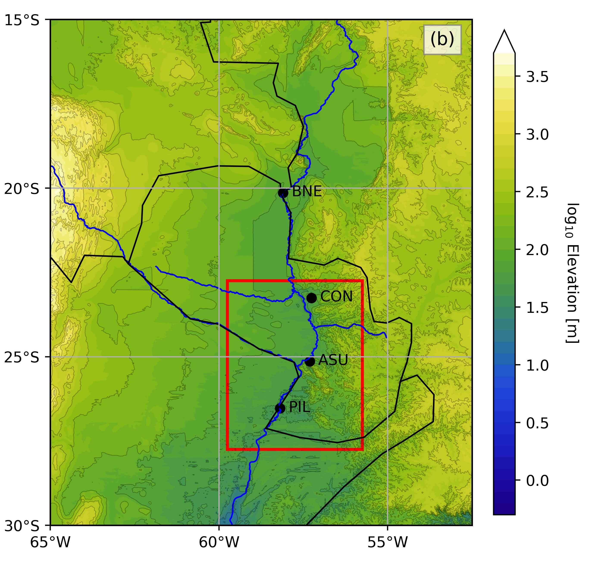
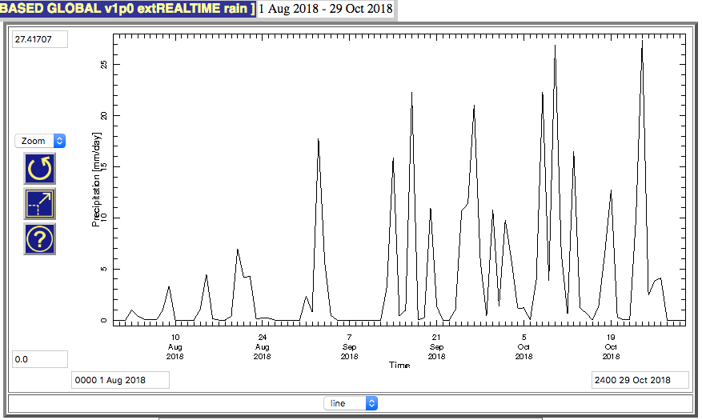
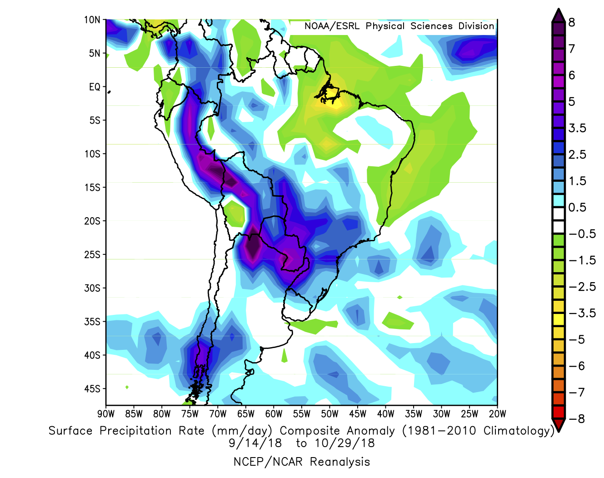
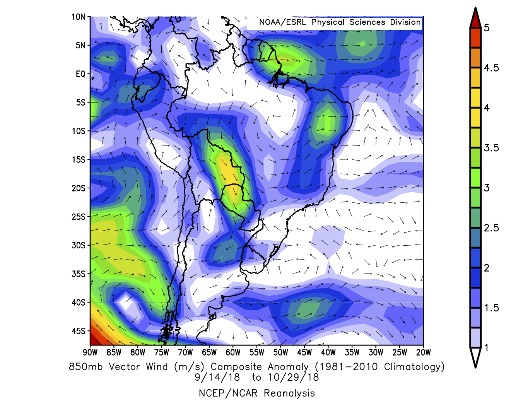
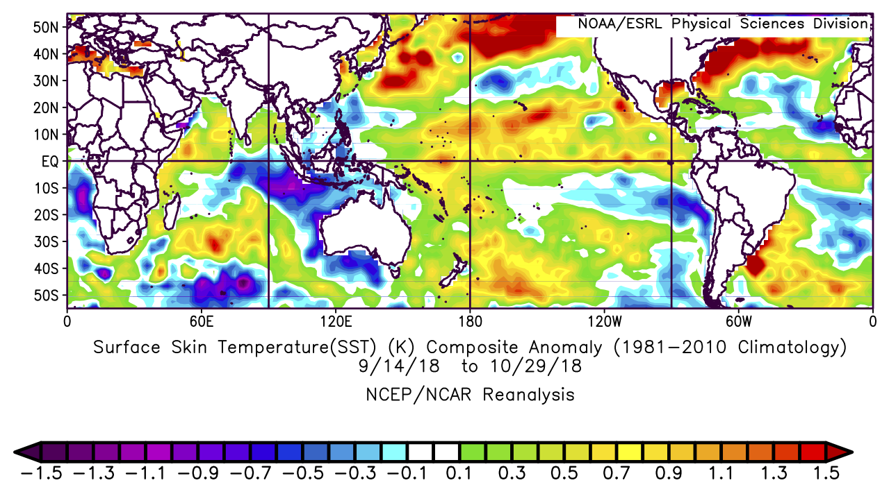
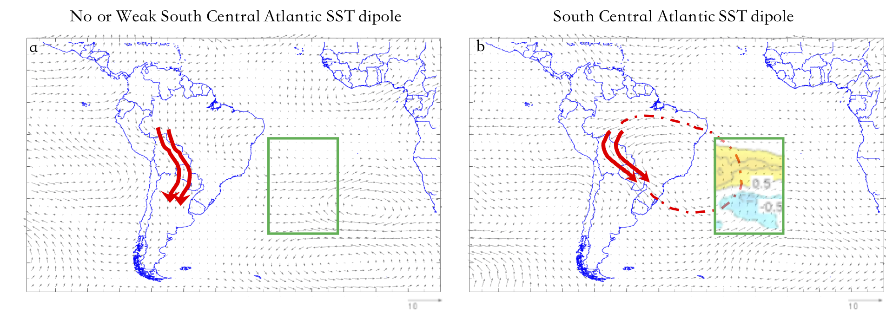

Nuevas Inundaciones en Paraguay
Posted on Wed 31 October 2018 in analysis
Según los periodistas de Floodlist, más de 10000 personas en Asunción y otras partes de Paraguay han sido obligados a abandonar sus hogares debido a graves inundaciones del Río Paraguay. Desde que yo, junto con tres coautores extraordinarios, acabo de publicar un artículo en Journal of Climate sobre los impulsores de lluvias fuertes y inundaciones en esta región (DossGollin et al., 2018), preparé una breve exploración de si los mismos mecanísmos físicos que identificamos provocaron el evento actual
El hombre, mis hijos —nos decía—, es como un río. Tiene barraca y orilla. Nace y desemboca en otros ríos. Alguna utilidad debe prestar. Mal río es el que muere en un estero...
—Hijo de Hombre, Augusto Roa Bastos
He pasado momentos hermosos en Paraguay, un país cuya vida está estrechamente relacionada con sus ríos. Históricamente proporcionaron comida, agua, y navegación; hoy proveen casi toda la electricidad del país gracias a proyectos hidroeléctricos (a veces controvertidos) en Yguazu y Yacyreta. Sin embargo, el hecho de que la mayoría de los paraguayos se encuentran a lo largo de los ríos Paraguay y Paraná significa que los paraguaos están altamente expuestos a las inundaciones.
Before we dive into analyzing what has caused the most recent floods, a few notes:
- If you are looking for a version in English of this post, please click here!
- Hago referencia a nuestro trabajo varias veces y también cito otros trabajos académicos. Si está interesado pero no puede acceder a un documento, contácteme y con gusto compartiré un pdf con usted! Liberemos al conocimiento!
- Mi castellano anda muy mal debido a que durante los últimos años escribo casí solo inglés! Disculpas por los errores de ortografía. Si alguna cosa no haya conseguido explicar, por favor de dejarme saber.
Cuenca del Río Paraguay
Vale la pena refrescarnos de la geografía de la región. La figura 1(b) de nuestro artículo muestra la cuenca del río Paraguay. Para analizar, sirve dividir entre la parte superior (en el Chaco) y la parte inferior (donde viven la mayoría de los Paraguayos). Las letras ASU indican Asunción, capital paraguaya.
Una característica relevante de esta región es que es extremadamente plana. Esto se muestra mediante los contornos de elevación en el mapa. Como consecuencia, las precipitaciones que caen aquí tienden a tardar mucho tiempo en drenarse. Esto implica que precipitaciones durante un período prolongado pueden causar inundaciones, incluso si ninguna de las tormentas individuales es particularmente intensa.
Lluvias Observadas
Ahora estamos listos para explorar las lluvias que provocaron este evento.
Empecemos examinando la lluvia observada en los últimos meses. Esta figura muestra la precipitación sobre la región definida por el cuadro rojo del mapa de arriba. Podemos ver que entre el 14 de septiembre y el 30 de octubre de 2018, la región observó una série persistente de lluvias. Por contexto, la precipitación promedio en esta región es de poco menos de 4 mm por día.
Ahora examinemos como se ven las lluvias en el mapa. Dado que las lluvias más fuertes ocurrieron entre el 14 de septiembre y el presente, he sumado las lluvias durante ese período. Esta imagen muestra anomalías de lluvia, que significa la diferencia entre lo que se observó y el promedio esperado dado el ciclo estacional [1]. Podemos ver que la región que alimenta la región fue particularmente afectada por lluvias fuertes [2].
Mecanismos Directos
Vale la pena pensar un poco sobre este patrón de lluvia. En nuestro artículo (DossGollin et al., 2018), encontramos que las precipitaciones intensas en Paraguay suelen ser provocadas por el Corriente de Vientos de Bajo Nivel de Sudamérica, o en inglés "South American Low-Level Jet", que trae la humedad y la energía (ambas son necesarias para la lluvia) desde la Amazonia hasta el sureste de Sudamérica. Este <<corriente>> de humedad e energía puede a veces pasa los 25 grados Sur, en cuyo caso favorecerá la occurencia de lluvias en el norte de Argentina y Uruguay (el llamado "corriente tipo Chaco" (Salio et al., 2002), o puede girar hacia el Este, en cuyo caso favorecerá la lluvia sobre Paraguay y SW Brasil (llamado"corriento tipo No-Chaco (Vera et al., 2006)). Si nos fijamos en la figura 6 de nuestro estudio, disponible en mi página de GitHub, se puede ver que la lluvia observada durante las últimas seis semanas se parece mucho al tipo de tiempo (lo llamamos el número 4) que identificamos como un factor clave de las inundaciónes de 2015-16.
Para tener una mejor idea de cómo se comportó el Corriente de Vientos de Bajo nivel de Sudamérica durante este período, podemos observar las anomalías climáticas que persistieron durante este período. La variable más interpretable para investigar es el viento. Esta gráfica muestra el viento a 850 hPa, que es la parte inferior de la atmósfera donde se transporta la mayor parte de la humedad y la energía en el corriente de bajo nivel, por lo que estos datos nos dicen mucho sobre el transporte de humedad a gran escala por la atmósfera.
La característica más obvia aquí es que la región alrededor (60W, 17.5S) muestra fuertes anomalías de viento, lo que significa que el corriente de bajo nivel fue mucho más fuerte durante este período. Esto tiene sentido lo que vimos en el gráfico de series de tiempo de lluvia: es razonable suponer que durante la mayoría o todos los picos de la serie de tiempo de lluvia, el corriente de bajo nivel estuvo activo ese día y / o el día anterior.
También es interesante observar algunas otras características en esta trama. Primero, si miramos un poco hacia el sureste de Paraguay, digamos en torno a (52.5W, 27.5S), vemos que la anomalía del viento, aunque de semana, apunta hacia Paraguay. Esto significa que (en promedio) la circulación no permitió que el corriente de bajo nivel empujara a Uruguay (este sería el evento del chaco "Chaco" definido anteriormente). Además, el aire que se mueve en esta dirección hacia la cuenca del río Paraguay inferior apoya la convergencia. En pocas palabras, cuando dos paquetes de aire cerca del fondo de la atmósfera chocan entre sí, tenderán a subir (ya que el suelo está debajo de ellos, no pueden bajar) y el movimiento ascendente favorece la lluvia. También parece que hay algunas cosas interesantes que suceden en las latitudes medias; Parece que hay un fuerte bajo persistente centrado alrededor (82.5W, 42.5S) que podría ser relevante aquí.
Mecanismos Indirectos
Ya hemosvisto un análisis no exhaustivo (es un blog en mi tiempo libre!).
Aún así, ya vimos que las tormentas de lluvia que provocaron las inundaciones actuales consistente con las observaciones [3] del corriente de bajo nivel. En nuestro artíuclo en Journal of Climate, encontramos algunos enlaces interesantes entre algunos índices climáticos regionales y las precipitaciones en esta región.
Aquí exploraremos un posible mecanismo, que es el océano. Dado que el calor específico (cantidad de energía requerida para elevar la temperatura) del agua es mucho más grande que el calor específico del aire, las anomalías del calentamiento en el océano pueden provocar una circulación atmosférica persistente en estas escalas de tiempo relativamente cortas [4].
Hay mucho que se podría desempacar aquí, pero me centraré en una observación particular. En nuestro artículo, planteamos la hipótesis de que un <<dipolo>> en el Atlántico centro-sur, lo definimos como que va de 30W a 10W y de 15S a 40S, puede favorecer los eventos tipo "No-Chaco" sobre los eventos tipo "Chaco" y por lo tanto aumentar el probabilidad de fuertes lluvias en Paraguay.
Aunque la hípotese especifíca fue que esto podría suceder durante los años de El Niño en el verano (diciembre-febrero), un dipolo como el que identificamos estuvo activo durante las últimas semanas. El dipolo durante las inundaciones actuales parece desplazarse un poco hacia el sur y el este de la region que identificamos (aproximadamente cinco grados). No obstante, puede haber contribuido a la lluvia que observamos.
Terminando
¡Gracias por leer hasta aquí! Sobran unos cuantos puntos más por si acaso se interesa.
Más investigación
¡No sería justo para mí escribir una publicación completa sin dejar espacio para futuras lecturas y futuros trabajos!
- Para obtener más información sobre la relación entre el Jet de bajo nivel de América del Sur y la lluvia, consulte la literatura académica como Marengo et al. (2004), Boers et al. (2013), Salio et al. (2007), o esta página excelente.
- He hablado sobre el corriente de vientos bajo nivel, pero es parte de un sistema complejo que se ha examinado a través de una variedad de otras perspectivas. Algunas personas han considerado esta región como parte de un sistema <<Monsoon>> Marengo et al. (2012). Otros como Nielsen et al. (2018), Carvalho et al. (2004), y Carvalho et al. (2002) han escrito sobre la <<Zona de convergencia del Océano Atlántico del Sur>>. Todas las perspectivas parecen útiles y aún estamos aprendiendo mucho.
- La relación identificada entre el dipolo en el Atlántico y el corriente de bajo nivel sigue siendo una hipótesis. Aún no tenemos datos suficientes para determinar absolutamente qué tan fuerte es la conección.
Gracias
- Esta es una publicación de blog, no un artículo académico, por lo que es probable que haya cometido algunos errores en el análisis. Si encuentra alguno, por favor contácteme!
- ¡Gracias a NOAA ESRL por proveer los datos y mapas
- Esta es una publicación viva y tengo la intención de actualizarla en las próximas semanas, ya que recibo comentarios de algunos colegas. Podrá encontrar todas las versiones de esta publicación en mi GitHub.
Notas al pie
Algunas advertencias adicionales y comentarios para el lector concienzudo:
| [1] | por supuesto, si está interesado la calculación del ciclo estacional para que podamos eliminarlo para identificar anomalías, querrá entrar en los detalles de cómo se hace. Creo que la herramienta web que estoy utilizando estima el ciclo estacional (también conocido como "Climatología") toma promedios mensuales (es decir, promedio de todos los septembres, promedio de todos los octobers, etc.). Es una metodología bastante aproximado, pero tiende a dar resultados similares a los métodos más sofisticados. |
| [2] | este no es el mejor conjunto de datos de lluvia. Ya que estamos promediando durante un tiempo relativamente largo, deberíamos estar más o menos cubiertos. Para estar seguro, observé algunos otros conjuntos de datos de lluvia y descubrí que parecía razonable. |
| [3] | los datos que estoy utilizando provienen de un llamado re-análisis, lo que significa que no es una observación directa. |
| [4] | sugerir que el océano solo impulsa la atmósfera es una simplificación excesiva: la atmósfera también impulsa el océano ya que son sistemas acoplados. |
Bibliography
Niklas Boers, Bodo Bookhagen, Norbert Marwan, Jürgen Kurths, and José Marengo. Complex networks identify spatial patterns of extreme rainfall events of the South American Monsoon System. Geophysical Research Letters, 40(16):4386–4392, 2013. URL: http://doi.wiley.com/10.1002/grl.50681, doi:10.1002/grl.50681. ↩
Leila M V Carvalho, C Jones, and Brant Liebmann. The South Atlantic convergence zone: Intensity, form, persistence, and relationships with intraseasonal to interannual activity and extreme rainfall. Journal of Climate, 17(1):88–108, 2004. URL: http://journals.ametsoc.org/doi/abs/10.1175/1520-0442\%282004\%29017\%3C0088\%3ATSACZI\%3E2.0.CO\%3B2, doi:10.1175/1520-0442(2004)017<0088:TSACZI>2.0.CO;2. ↩
Leila M V Carvalho, Charles Jones, and Brant Liebmann. Extreme Precipitation Events in Southeastern South America and Large-Scale Convective Patterns in the South Atlantic Convergence Zone. Journal of Climate, 15(17):2377–2394, 2002. doi:10.1175/1520-0442(2002)015<2377:EPEISS>2.0.CO;2. ↩
J A Marengo, B Liebmann, A M Grimm, V Misra, Pedro L Silva Dias, Iracema F A Cavalcanti, Leila M V Carvalho, E H Berbery, T Ambrizzi, C S Vera, A Celeste Saulo, J Nogues Paegle, E Zipser, Anji Seth, and L M Alves. Recent developments on the South American monsoon system. International Journal of Climatology, 32(1):1–21, 2012. URL: http://doi.wiley.com/10.1002/joc.2254, doi:10.1002/joc.2254. ↩
Jose A Marengo, Wagner R Soares, Celeste Saulo, and Matilde Nicolini. Climatology of the Low-Level Jet East of the Andes as Derived from the NCEP–NCAR Reanalyses: Characteristics and Temporal Variability. Journal of Climate, 17(12):2261–2280, 2004. URL: http://journals.ametsoc.org/doi/abs/10.1175/1520-0442\%282004\%29017\%3C2261\%3ACOTLJE\%3E2.0.CO\%3B2, doi:10.1175/1520-0442(2004)017<2261:cotlje>2.0.co;2. ↩
David Marcolino Nielsen, André Luiz Belém, Edilson Marton, and Marcio Cataldi. Dynamics-based regression models for the South Atlantic Convergence Zone. Climate Dynamics, 19(10):716–27, 2018. URL: http://link.springer.com/10.1007/s00382-018-4460-4, doi:10.1007/s00382-018-4460-4. ↩
P Salio, M Nicolini, and A Celeste Saulo. Chaco low-level jet events characterization during the austral summer season. Journal of Geophysical Research, 2002. URL: http://doi.wiley.com/10.1029/2001JD001315, doi:10.1029/2001JD001315. ↩
Paola Salio, Matilde Nicolini, and Edward J Zipser. Mesoscale convective systems over southeastern South America and their relationship with the South American low-level jet. Monthly Weather Review, 135(4):1290–1309, 2007. URL: http://journals.ametsoc.org/doi/abs/10.1175/MWR3305.1, doi:10.1175/MWR3305.1. ↩
C Vera, J Baez, M Douglas, C B Emmanuel, J Marengo, J Meitin, M Nicolini, J Nogues Paegle, J Paegle, O Penalba, P Salio, A Celeste Saulo, M A Silva Dias, Pedro L Silva Dias, and E Zipser. The South American Low-Level Jet Experiment. Bulletin of the American Meteorological Society, 87(1):63–78, 2006. URL: http://journals.ametsoc.org/doi/10.1175/BAMS-87-1-63, doi:10.1175/BAMS-87-1-63. ↩
James Doss-Gollin, Ángel G Muñoz, Simon J Mason, and Max Pastén. Heavy rainfall in Paraguay during the 2015-2016 austral summer: causes and sub-seasonal-to-seasonal predictive skill. Journal of Climate, 2018. URL: http://journals.ametsoc.org/doi/10.1175/JCLI-D-17-0805.1, doi:10.1175/JCLI-D-17-0805.1. ↩ 1 2